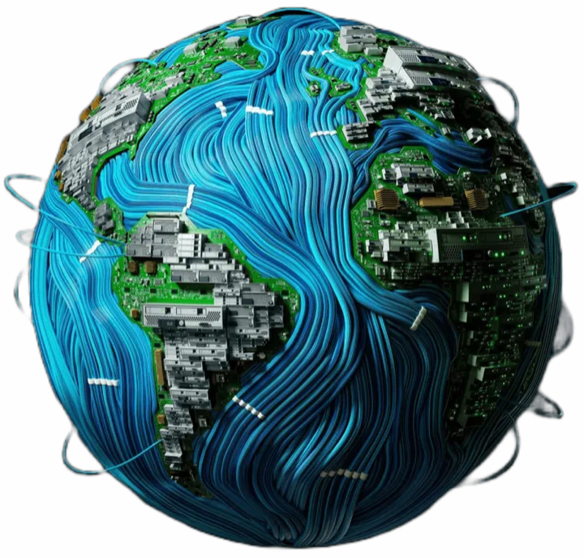

Web sitesi; bulunma, güven oluşturma, talep toplama ve iş süreçlerini destekleme görevlerini tek merkezde birleştirir.
WEB SİTESİ
BULUNURLUKArama ve içerik
GÜVENKanıt ve uzmanlık
TALEPForm ve iletişim
SİSTEMEntegrasyon ve veri
Piton Studios / Approach01 / 04
Tasarım · Kod · AI
Neden Piton Studios?
Sadece sayfa tasarlamıyoruz. Markayı, kullanıcı yolculuğunu, teknoloji altyapısını ve iş hedefini tek çalışan sistemde birleştiriyoruz.

Business Notes / Channels01 / 04
Kanal değil, merkez
Sosyal medya varken web sitesi neden gerekli?
Sosyal medya erişim sağlar. Web sitesi ise markanın kontrol ettiği, aramada bulunan ve talebi yöneten dijital merkezdir.
SOSYAL MEDYAPlatform kuralları Akış odaklı görünürlük Kısa içerik ömrü Sınırlı veri kontrolü
WEB SİTESİMarka kontrolü Arama görünürlüğü Kalıcı içerik Ölçülebilir aksiyon
Business Notes / Website02 / 04
01 · Dört temel görev
Web siteniz ne yapmalı?
İyi bir web sitesi yalnızca şirketi anlatmaz; kullanıcıyı doğru bilgi ve doğru aksiyonla buluşturur.
01Bulunur olmakArama motorları ve AI destekli arama deneyimleri için anlaşılır içerik yapısı kurar.
02Güven oluşturmakProje, süreç, referans ve uzmanlığı karar anına yakın gösterir.
03Talep toplamakForm, WhatsApp, rezervasyon veya satın alma gibi aksiyonları kolaylaştırır.
04Süreci desteklemekCRM, ödeme, rezervasyon ve otomasyon sistemleriyle iş akışına bağlanır.
Piton Studios / Approach02 / 04
01 · Tek çatı altında
Parçalar değil, bütün sistem.
Projenin birbirine bağlı dört katmanını aynı hedef ve aynı tasarım dili içinde ele alıyoruz.
01StratejiHedef, kullanıcı, teklif ve başarı ölçütü netleştirilir.
02TasarımBilgi mimarisi, kullanıcı akışı ve marka deneyimi kurulur.
03GeliştirmeHızlı, responsive ve sürdürülebilir teknik yapı geliştirilir.
04BüyümeSEO/GEO, ölçüm, entegrasyon ve iyileştirme katmanları eklenir.
Business Notes / Channels02 / 04
01 · Roller farklıdır
Karşılaştırma değil, iş bölümü.
En güçlü yapı, sosyal medyayı keşif kanalı; web sitesini ise güven ve dönüşüm merkezi olarak kullanır.
SOSYAL MEDYA
Ana görevKeşif
İçerik ömrüKısa
KontrolPlatformda
AksiyonDağınık
AramaSınırlı
WEB SİTESİ
Ana görevKarar
İçerik ömrüKalıcı
KontrolMarkada
AksiyonYönlendirilmiş
AramaGeliştirilebilir
Sosyal medya ilgiyi başlatır. Web sitesi bu ilgiyi bilgi, güven ve iletişim akışıyla nitelikli talebe dönüştürür.
Business Notes / Website03 / 04
02 · Karar yolculuğu
Ziyaretçiden müşteriye.
Kullanıcı bir anda karar vermez. Her aşamada farklı bir soruya cevap arar.
01Keşif“Bu marka benim ihtiyacımı çözüyor mu?”
02Anlama“Tam olarak ne sunuyor ve nasıl çalışıyor?”
03Güven“Bunu yapabildiğine dair hangi kanıtlar var?”
04Aksiyon“Şimdi nasıl iletişime geçer veya satın alırım?”
Piton Studios / Approach03 / 04
02 · Çalışma biçimimiz
Fikirden yayına net süreç.
Belirsizliği azaltan, kararları görünür kılan ve her aşamada somut çıktı üreten bir proje akışı kuruyoruz.
01KEŞİFProblemi tanımlarız.Hedef, kullanıcı, kapsam ve öncelikler.
02MİMARİAkışı kurarız.İçerik, sayfa yapısı ve kullanıcı yolculuğu.
03ÜRETİMTasarlayıp geliştiririz.Responsive arayüz, kod ve entegrasyonlar.
04DOĞRULAMATest edip ölçeriz.Hız, erişilebilirlik, SEO ve kritik akışlar.
Proje boyunca yalnızca “ne yaptığımız” değil, “neden yaptığımız” da görünür kalır. Böylece teslim edilen sistem ekibiniz tarafından anlaşılır ve sürdürülebilir olur.
Business Notes / Channels03 / 04
02 · Birlikte çalıştığında
Kanal değil, ekosistem.
Web sitesi, sosyal medya ve iş araçları arasında veri ve mesaj tutarlılığı kurulduğunda dijital sistem güçlenir.
WEB SİTESİDİJİTAL MERKEZ
SOSYAL MEDYAİlgi ve topluluk
ARAMA / SEOİhtiyaç anında bulunma
CRM / OTOMASYONTakip ve operasyon
ÖLÇÜMDavranış ve iyileştirme
Business Notes / Website04 / 04
03 · Size ait dijital varlık
Bugünü değil, büyümeyi taşımalı.
Doğru kurulan web sitesi, yeni içerik ve iş ihtiyaçları geldikçe yeniden başlamak yerine genişleyebilir.
01 · İÇERİKKalıcı bilgi merkeziHizmetler, projeler, uzmanlık ve sık sorulan sorular tek kaynakta yaşar.
02 · VERİÖlçülebilir davranışKullanıcının hangi içerikle etkileştiği ve nerede aksiyon aldığı izlenir.
03 · ENTEGRASYONİş araçlarına bağlanırCRM, ödeme, rezervasyon, e-posta ve otomasyon sistemleriyle çalışır.
04 · ÖLÇEKYeni ihtiyaçlara açılırDil, ürün, hizmet, bölge veya kullanıcı rolü eklendikçe yapı büyüyebilir.
Web sitesi bir defalık broşür değil; markanın kontrol ettiği ve zaman içinde değer biriktiren dijital altyapıdır.
Piton Studios / Approach04 / 04
03 · Farkımız
Altı boyutu birlikte düşünürüz.
Başarılı dijital ürün tek bir güçlü özelliğe değil, birbirini destekleyen dengeli bir sisteme dayanır.
İŞ HEDEFİTasarım kararını sonuçla bağlarız.
TEKNİK KALİTEHız, güvenlik ve sürdürülebilirliği birlikte ele alırız.
UZUN VADEYayından sonraki gelişimi baştan düşünürüz.
Business Notes / Channels04 / 04
03 · Doğru yatırım kararı
Web sitesi ne zaman öncelik olmalı?
Aşağıdaki durumlardan biri bile varsa, kontrol ettiğiniz bir dijital merkeze ihtiyaç vardır.
01Teklifiniz büyüdüSosyal medya gönderileri hizmet kapsamını anlatmaya yetmiyor.
02Güven eksikProjeler ve uzmanlık karar anında düzenli görünmüyor.
03Talep dağınıkMesajlar farklı kanallarda kayboluyor ve takip zorlaşıyor.
04Aramada yoksunuzİhtiyaç anında sizi arayan kullanıcı markanıza ulaşamıyor.
05Süreç manuelRezervasyon, teklif veya veri girişi gereksiz iş yükü üretiyor.
06ÖlçemiyorsunuzHangi kanalın talep ürettiği ve nerede kayıp olduğu bilinmiyor.
İLK ADIMHedefinizi, mevcut sorunu ve ihtiyacınız olan sistemi birlikte netleştirelim.